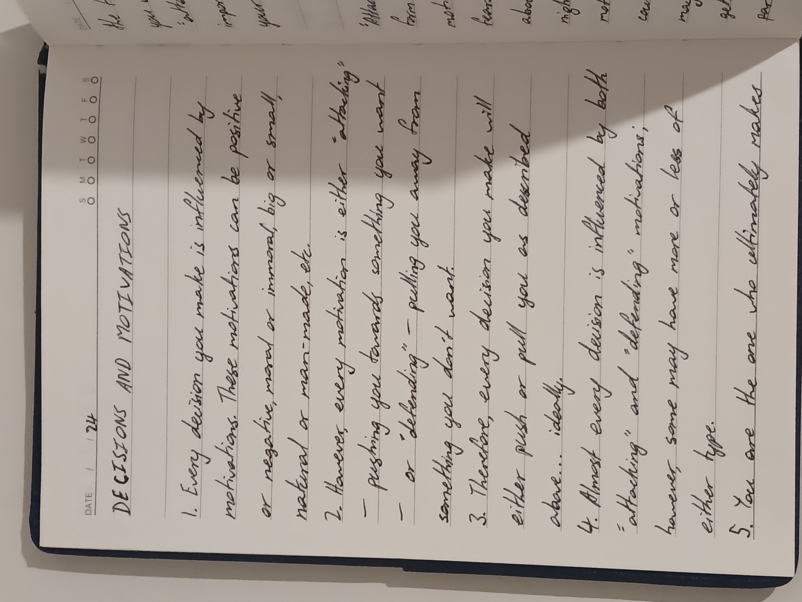
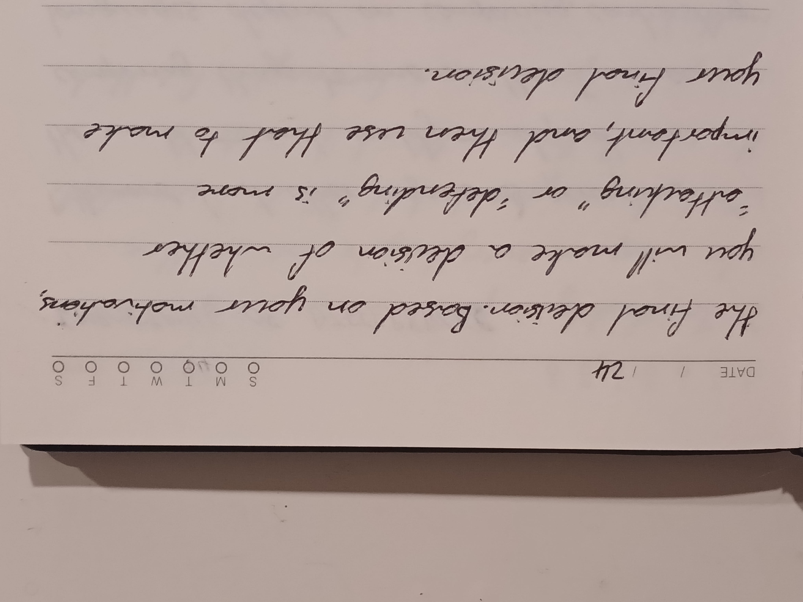

Decisions and Motivations

Welcome to Thoughts of a Human. On this website, I will share some of my observations and beliefs about life.
You can use the page navigation at the top of the head to navigate between pages, or the section navigation below to navigate between sections.
(Tip: press '0' to see a list of hotkeys and their actions.)
And here's a link to something I think you should see. Did you get rickrolled?
Decisions and Motivations
Every decision you make is influenced by motivations. These motivations can be positive or negative, moral or immoral, big or small, natural or man-made, etc.
However, every motivation is either 'attacking' — pushing you towards something you want — or 'defending' — pulling you away from something you don't want.
Therefore, every decision you make will either push or pull you as described above... ideally.
Almost every decision is influenced by both 'attacking' and 'defending' motivations; however, some may have more or less of either type.
You are the one who ultimately makes the final decision. Based on your motivations, you will make a decision of whether 'attacking' or 'defending' is more important, and then use that to make your final decision.
Gallery

